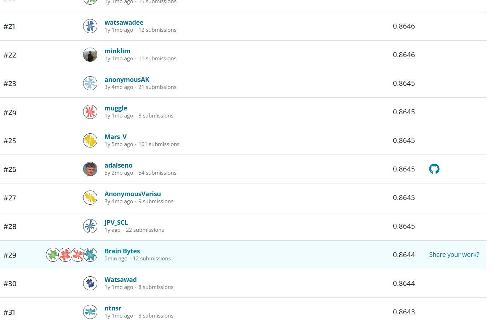
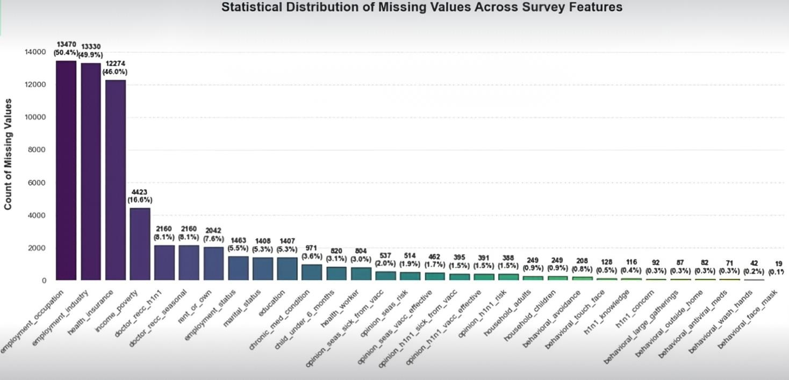
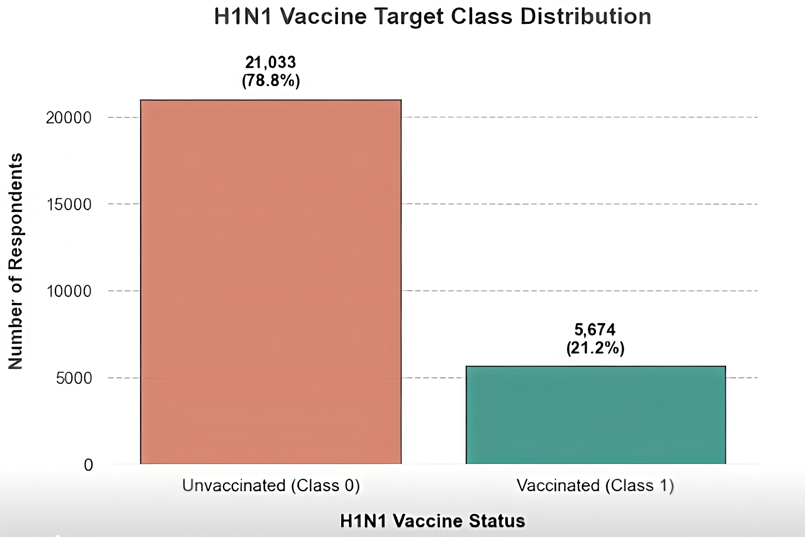
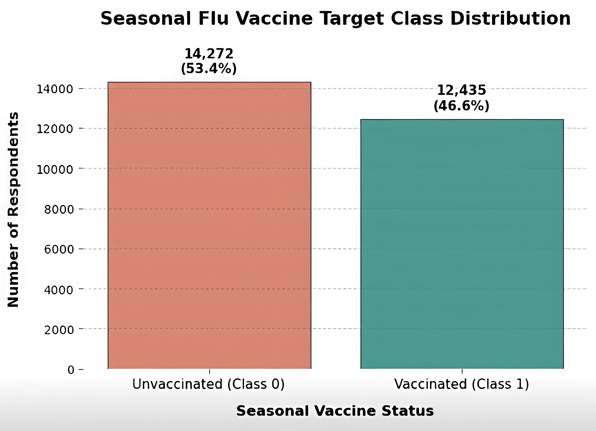
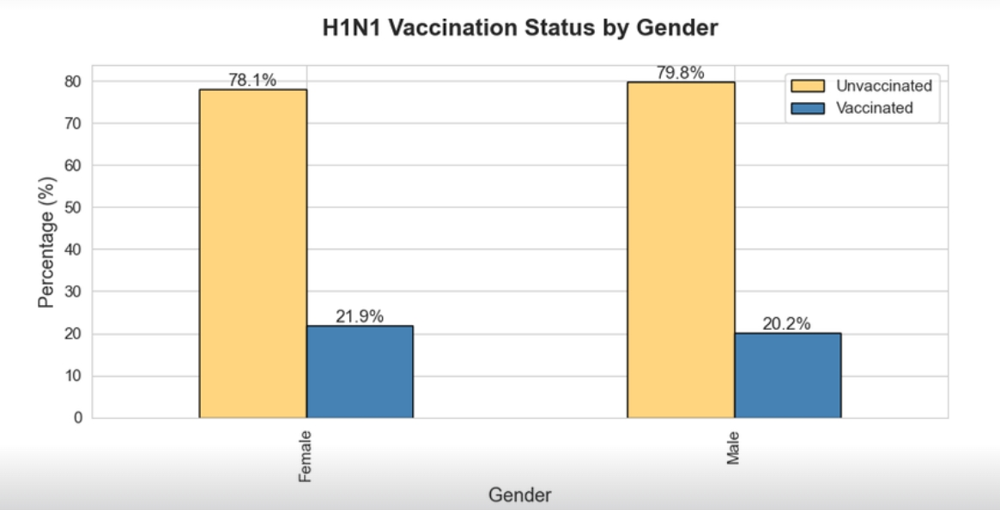
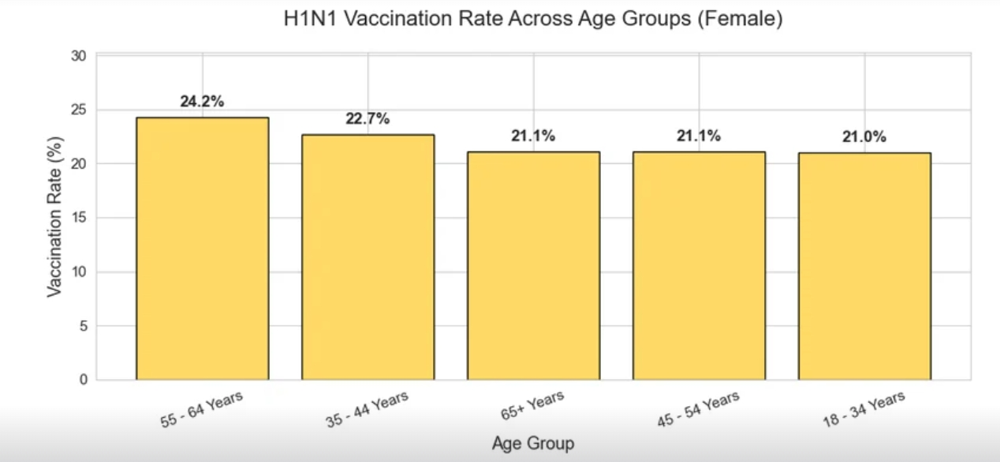
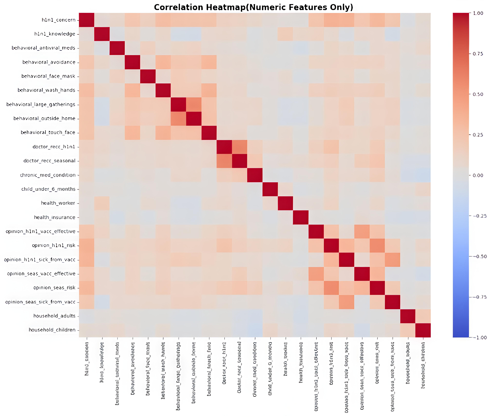
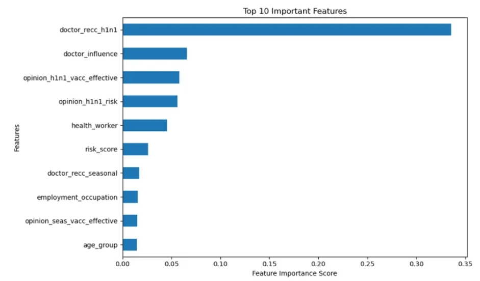
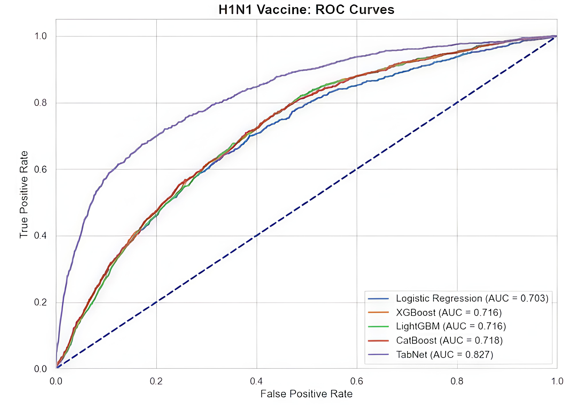
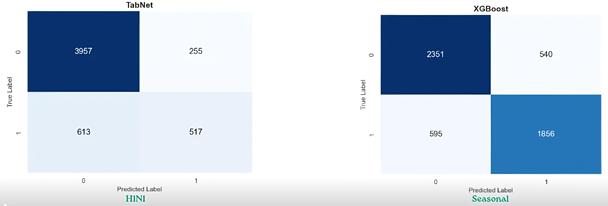

About Me
Aditi Ullegaddi
USN: 01FE24BCS076
I am a Computer Science and Engineering student with a strong interest in Machine Learning and Data Science. I enjoy exploring new technologies, working on practical projects, and applying data-driven approaches to solve real-world problems. Through continuous learning and hands-on experience, I am constantly developing my technical and analytical skills.

Rank 29 Image PlaceholderUpdate path: /drivendata_rank.jpg
Introduction
Problem Statement
To predict the likelihood of individuals receiving H1N1 and seasonal flu vaccines using demographic characteristics, behavioral patterns, and vaccine-related opinions. This model aims to identify key factors influencing vaccination decisions and generate probability-based predictions, enabling data-driven public health interventions.
Objectives
- Identify key features (behavioral, demographic, attitudinal) that drive vaccine uptake.
- Predict probability that a respondent received H1N1 vaccine.
- Predict probability for seasonal flu vaccine.
- Evaluate model performance using ROC-AUC and develop production-ready pipeline.
Dataset Overview
| Source | National 2009 H1N1 Flu Survey (NHFS), US HHS |
|---|---|
| Training rows | 26,707 |
| Test rows | 26,708 |
| Total features | 35 | Target variables | h1n1_vaccine, seasonal_vaccine |
Tools & Workflow
Python Pandas NumPy Matplotlib Seaborn Scikit-learn XGBoost LightGBM CatBoost TabNet
Domain and Dataset Description
Domain Background
Beginning in spring 2009, H1N1 influenza (swine flu) swept across the world. A vaccine became publicly available in October 2009. This project uses the National 2009 H1N1 Flu Survey phone data, covering social, economic, demographic background, opinions on risks, vaccine effectiveness, and mitigating behaviors.
Key Factors Influencing Uptake
- Doctor's recommendation (strongest predictor)
- Perceived vaccine effectiveness and risk of illness
- Behavioral habits (hand washing, mask usage)
- Age group, health worker status, insurance
Evaluation metric: ROC-AUC.
Missing Values Insight
30 columns contained missing values. Employment-related features had the highest missing entries; behavioral features fewer missing values.



Preprocessing Steps
Missing Value Imputation
Median imputation for numeric columns (health-related behavioral scores). Mode imputation for categorical columns (employment, income bracket).
Encoding & Scaling
Ordinal encoding for ordinal features (e.g., opinion ratings). StandardScaler for numeric features before model training.
Visualization & Analysis



Feature Importance & Engineering
Feature Importance

Top predictors: doctor_recommendation, age_group, health_insurance, opinion_vacc_effective, and behavioral habits.
Feature Engineering
- behavioral_sum — sum of preventive behaviors (hand washing, mask, social distancing).
- opinion_sum — composite of perceived risk and vaccine effectiveness.
- health_score — based on chronic conditions and recent doctor visits.
- risk_gap — difference between perceived risk of H1N1 vs seasonal flu.
Model Building & Evaluation
Models Tested
- Logistic Regression (baseline)
- XGBoost
- LightGBM
- CatBoost
- TabNet (deep learning)
Hyperparameter Tuning
RandomizedSearchCV for XGBoost/LightGBM; Optuna for CatBoost. Early stopping to prevent overfitting.
H1N1: TabNet 0.827, XGBoost 0.821
Seasonal: XGBoost 0.866, LightGBM 0.862



Conclusion & Business Impact
Key Takeaways
- Doctor recommendation is the single strongest predictor of vaccine uptake.
- Seasonal vaccination behavior is easier to model than H1N1-specific behavior.
- Feature engineering (behavioral and opinion composites) improves model robustness.
- Ensemble methods (XGBoost, LightGBM) provide best balance of accuracy and speed.
Business Impact & SDG 3
Predictive models enable targeted public health messaging, resource allocation, and outreach campaigns to increase vaccination rates in under-vaccinated groups. Supports SDG 3 (Good Health and Well-Being) by improving pandemic preparedness and reducing infectious disease spread.
Learning Reflections
Challenges Overcome
- Handling 30+ columns with varying missingness — systematic imputation strategy.
- Class imbalance — using ROC-AUC as primary metric instead of accuracy.
- Large number of categorical features — ordinal encoding and domain-driven grouping.
- Computational cost of TabNet — reduced feature set for prototyping.
Skills Acquired
- End-to-end ML pipeline design (cleaning → EDA → engineering → modeling).
- Interpretability — SHAP analysis and feature importance.
- Collaboration via Git/GitHub and DrivenData platform.
- Hyperparameter optimization using Optuna and RandomizedSearch.